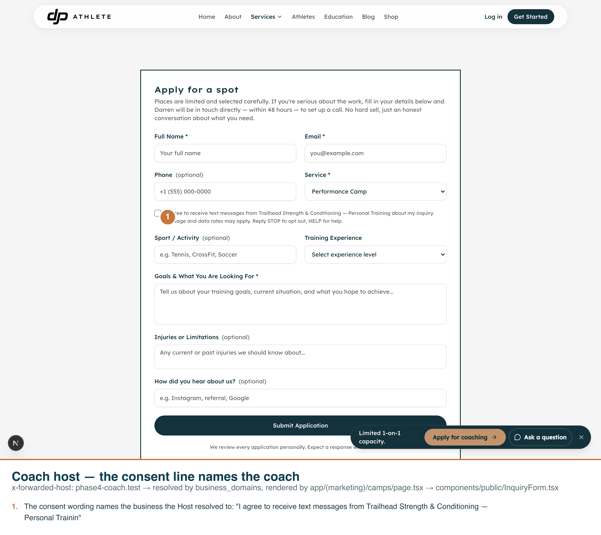
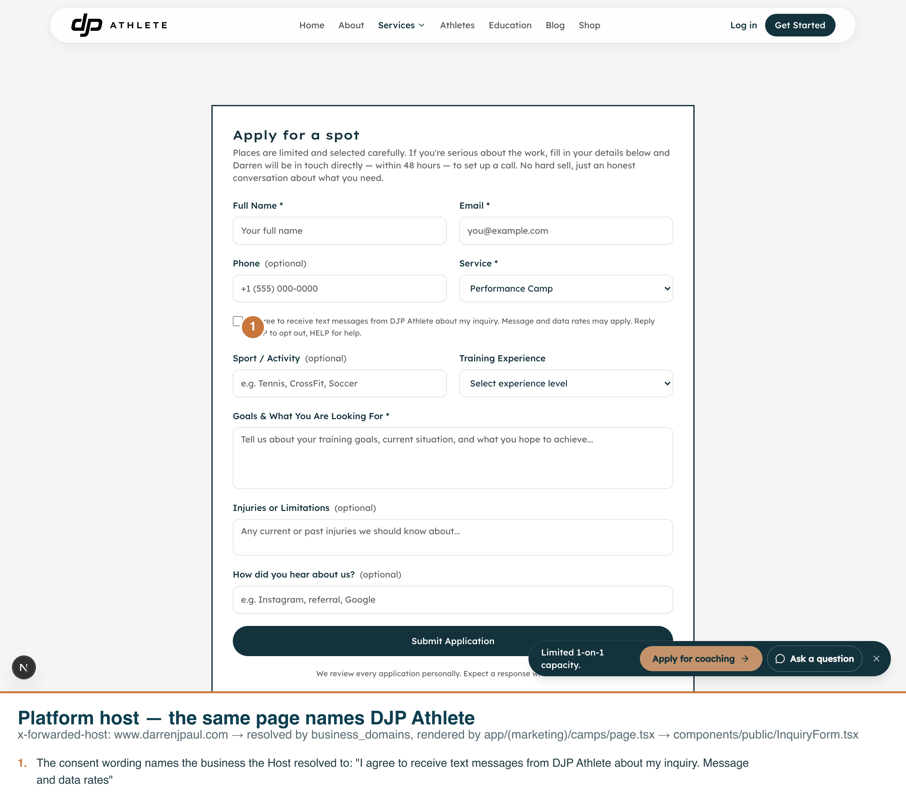
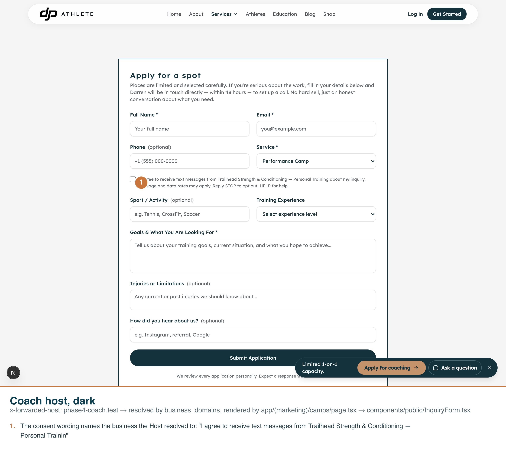
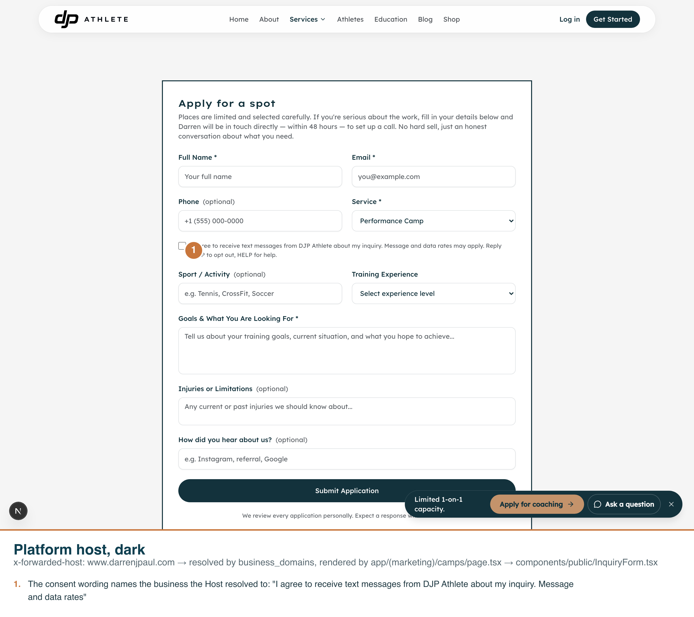

Same route, /camps, requested with two different Hosts. Captured with
scripts/capture-tenancy-phase4-screenshots.mjs against the real dev server on port 3050.
The callouts are burned into each PNG.
What each shot proves. app/(marketing)/camps/page.tsx renders
<InquiryForm> (components/public/InquiryForm.tsx), a converted server
component that calls resolvePublicTenant() (lib/tenancy/public.ts) — the
same function /api/ask/config calls. That function reads x-forwarded-host
first, then host, and looks the (normalised) value up in business_domains.
Chromium refuses to override the real Host header, so every capture below sets
x-forwarded-host instead — the header the resolver actually reads first.
phase4-coach.test) resolves via the row seeded for
"Trailhead Strength & Conditioning" and the consent line names its display name,
Trailhead Strength & Conditioning — Personal Training.www.darrenjpaul.com) resolves via the seeded www
row for the platform business and the same consent line names DJP Athlete.business_domains rows and both businesses' display_name.One capture-script bug found and fixed along the way (not a tenancy bug):
app/(marketing)/camps/page.tsx wraps its sections — including the inquiry form — in
components/shared/FadeIn.tsx, which animates opacity: 0 → 1 via
framer-motion's whileInView once the section scrolls into view.
scrollIntoViewIfNeeded() jumps to the element instantly, so the very first run screenshotted
mid-fade — the consent text was already correct in the DOM (the marker position and caption text were
right) but the pixels were still almost invisible. Fixed by waiting 1200 ms after the scroll for the
fade to settle before reading the bounding box and taking the shot. The four PNGs below are from the
corrected run.
Dark mode: the dark captures are effectively pixel-identical to their
light counterparts (a <0.01% per-pixel difference consistent with a single animation
frame landing slightly differently between two separate page loads, not a theme change). The marketing
site does not appear to implement a dark theme — kept per instructions rather than treated as a
failure.

x-forwarded-host: phase4-coach.test. The consent
checkbox reads "I agree to receive text messages from Trailhead Strength & Conditioning — Personal
Training about my inquiry. Message and data rates may apply. Reply STOP to opt out, HELP for help."
x-forwarded-host: www.darrenjpaul.com. The same
page, same form, same route — the consent checkbox now reads "I agree to receive text messages from DJP
Athlete about my inquiry. Message and data rates may apply. Reply STOP to opt out, HELP for help."
colorScheme: "dark". Visually identical to shot 1 — see the dark-mode note above.
colorScheme: "dark". Visually identical to shot 2 — see the dark-mode note above.Same resolver, hit directly at /api/ask/config — three Hosts, and the server
log's own account of what happened on the one Host with no row.
# coach host (row for the seeded business)
$ curl -s -H "x-forwarded-host: phase4-coach.test" http://localhost:3050/api/ask/config
{"enabled":true,"displayName":"Trailhead Strength & Conditioning — Personal Training"}
# platform host (the seeded www row)
$ curl -s -H "x-forwarded-host: www.darrenjpaul.com" http://localhost:3050/api/ask/config
{"enabled":true,"displayName":"DJP Athlete"}
# no row: localhost falls back to the platform, and the server log says so ONCE
$ curl -s http://localhost:3050/api/ask/config
{"enabled":true,"displayName":"DJP Athlete"}
# server log lines mentioning [tenancy]:
[tenancy] no business_domains row for host "localhost"; serving the platform